-
Black Opium Trade
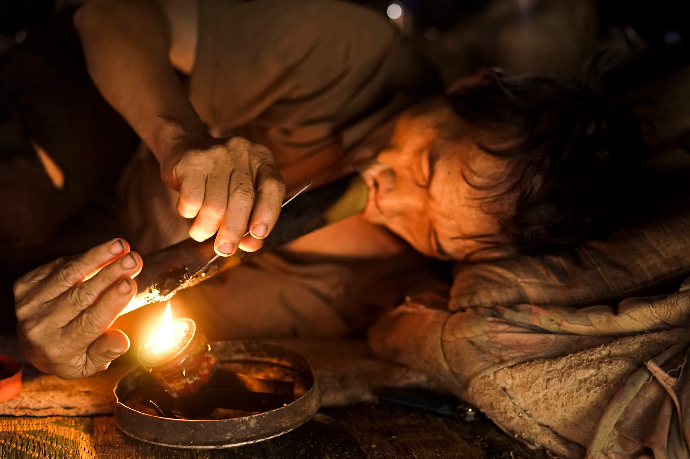
Black Opium Trade
Myanmar, Laos, Thailand
Estimation: 21.54 million victimsThe Golden Triangle region, where the borders of Myanmar, Laos, and Thailand meet, has been a hotspot for opium production and trafficking. Criminal organizations exploit the area's remote terrain for the cultivation, processing, and transportation of illegal narcotics.
Click To Explore -
Seafood Slave
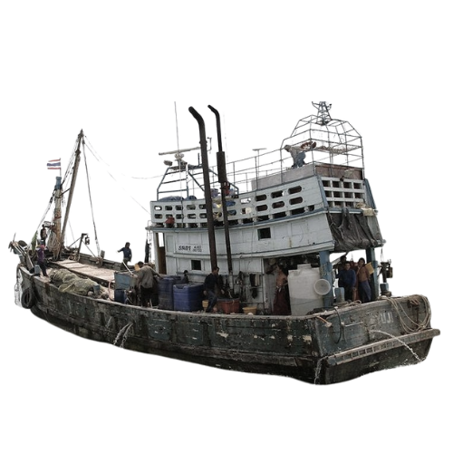
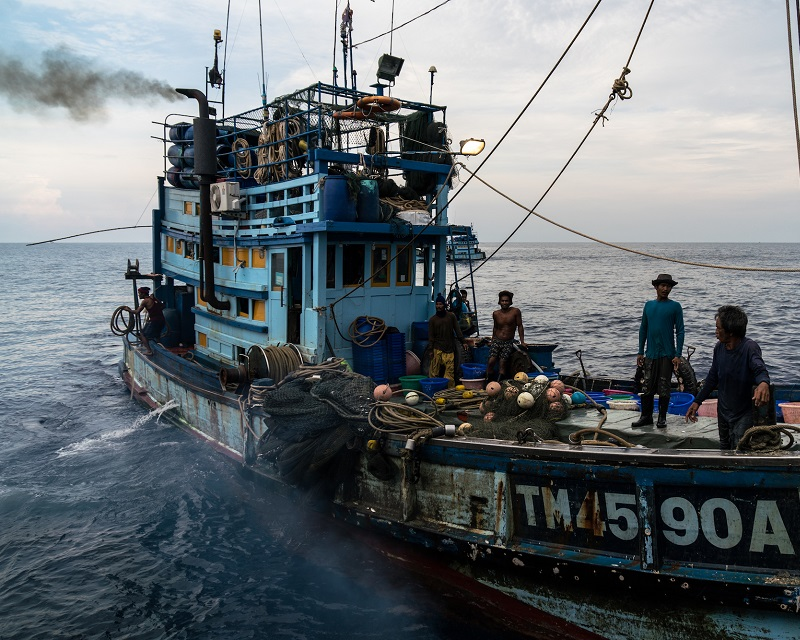
Seafood Slave
Thailand
Estimation: 35.8 million victimsThe Guardian exposed slave labor in Thailand's seafood industry, revealing 20-hour shifts, beatings, torture, and killings. Some endured years at sea, forced drug use, and witnessed murders. Victims had seen slaves killed in front of them, one of whom was tied, limb by limb, to the bows of four boats and pulled apart at sea.
Click To Explore -
Marriage of The Dead & The Living
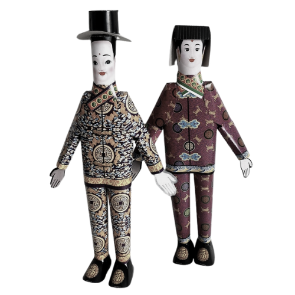

Marriage of The Dead & The Living
China
Aug 24, 2016
Estimation: 10,000 victimsTraffickers digging up and selling corpses on the black market to enable "ghost marriages". Those who believe in the custom, have been practicing it for 3000 years. This practice ensures that the unmarried get married to people when they are dead so that they are not single in their afterlife.
Click To Explore -
Slave Bride
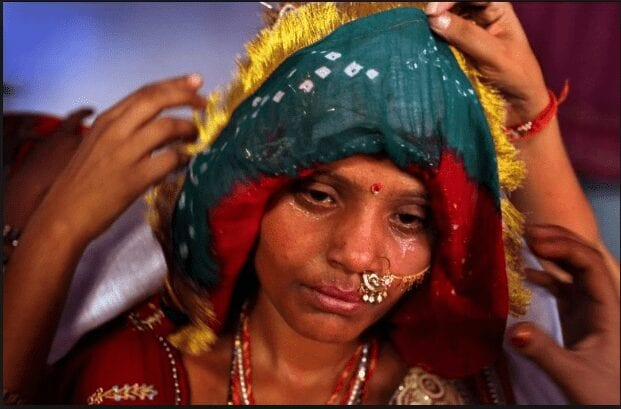
India Slave Bride
India
Nov 14, 2016
Estimation: 563,000 victimsThe first time Muklesha was sold, she was just 12 years old. Her buyer was a man in his 70s. Marriage and a baby quickly followed. But, three years later, the man died and Muklesha was again put up for sale.
Click To Explore -
Breast Milk Trade
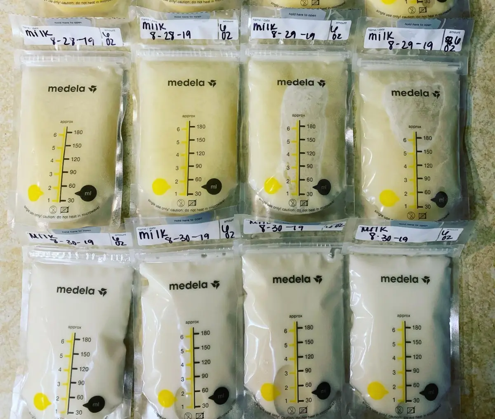
Breast Milk Trade
Cambodia
March 29, 2017
Estimation: 73,000 victimsFor the past two years, dozens of women have been supplying their excess breast milk to a company called Ambrosia Labs. The company has been processing and selling the milk in the US. It was marketed at US mothers who have problems producing milk for their babies.
Click To Explore -
Nth Room Chat
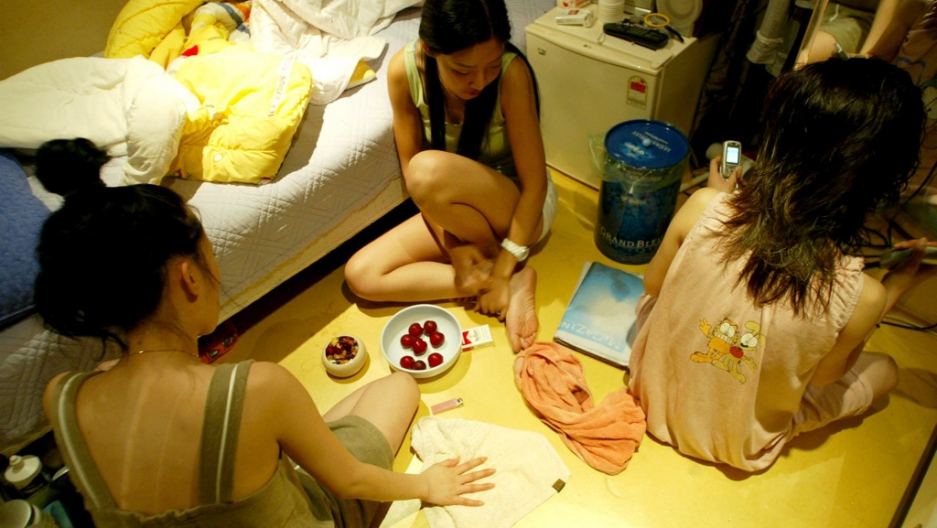
Nth Room
Korea
March 23, 2020
Estimation: 150 victims
260,000 users
3,757 traffickers arrestedIn 2019, South Korea faced the shocking "Nth Room" case, an online exploitation scandal. Perpetrators ran chatrooms on Telegram, exploiting women, coercing victims into explicit acts. Authorities arrested key figures, sparking a nationwide outcry and intensifying efforts to combat cybersex trafficking.
Click To Explore -
Child Soldier
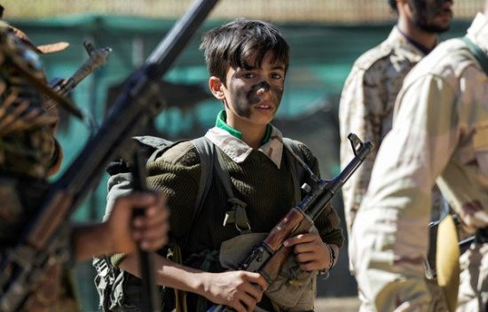
Child Soldier
Myanmmar
June 15, 2021
Estimation: 70,000 victimsThe Myanmar military (Tatmadaw) has faced allegations of recruiting and using child soldiers in armed conflicts. Children, both boys and girls, are vulnerable to abduction or coercion, often facing dire consequences if they resist recruitment. Once recruited, they are subjected to military training and deployed in active conflict zones.
Click To Explore -
Nechrophilia in a Morgue
Nechrophilia
Bangladesh
Nov 21, 2021
Estimation: unknownSix dead bodies of women aged between 12 and 20 years had been kept in that morgue at night before the autopsies were done. A forensic lab report of DNA profile confirmed the presence of the accused person's sperm in the high vaginal swab of all the six dead bodies.
Click To Explore -
KK Garden
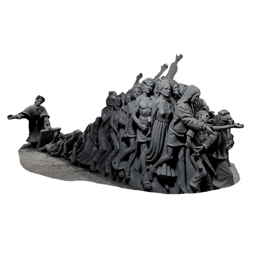
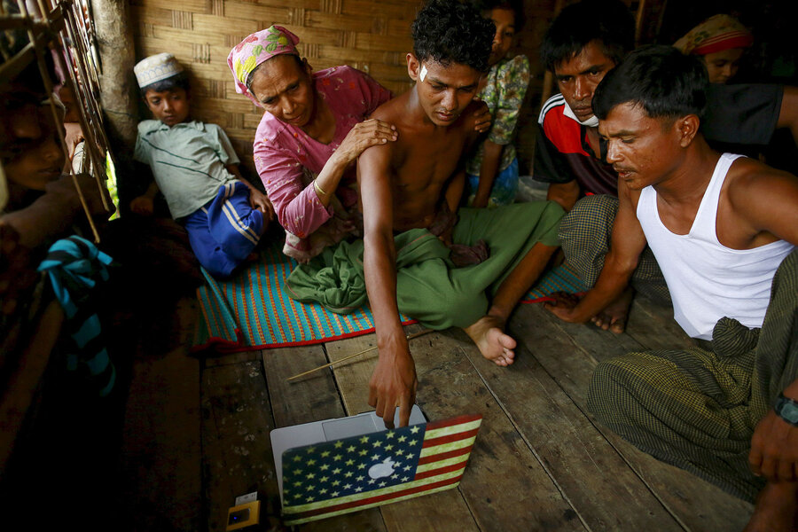
KK Garden
Myanmmar
Aug 29, 2022
Estimation: unknownUnveiling the harrowing escape from a human trafficking ring in Myanmar's KK region. The victims, held captive in a garden of hell, share their courageous journey to freedom. Explore the shocking details of this modern-day tragedy, exposing the dark underbelly of human trafficking in the heart of Southeast Asia.
Click To Explore -
Organ Harvesting
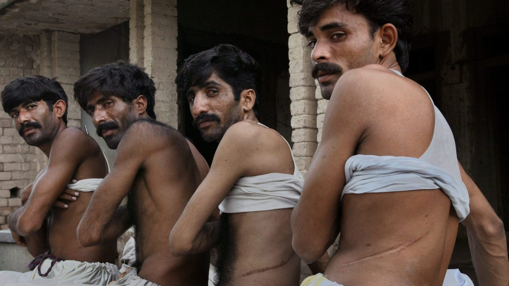
Organ Harvesting
Pakistan
Oct 3, 2023
Estimation: 25 millionChina and Pakistan, leaders in worldwide “transplant tourism,” on trafficking in human kidneys taken from executed prisoners and the poor, illegally buying kidneys from live donors. The kidneys are believed to be sold for up to 10 million rupees (120,000USD).
Click To Explore